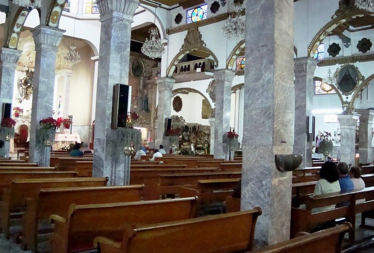
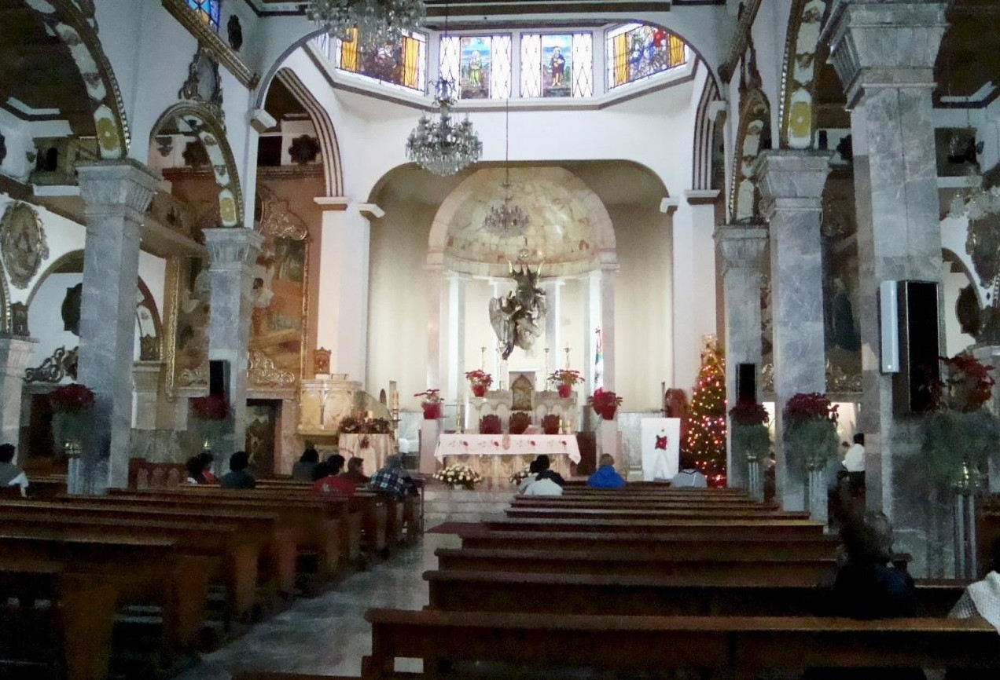

Parroquia Asunción de María Tepalcatitlán
Industrial, Gustavo A. Madero, Ciudad de México
Industrial, Gustavo A. Madero, Ciudad de México
La Parroquia de la Asunción de María, un emblemático recinto religioso en la Colonia Industrial de la Alcaldía Gustavo A. Madero, es mucho más que una iglesia; es un testimonio vivo de la rica historia de la Ciudad de México y del antiguo pueblo de Tepalcatitlán.
Antes de la fundación de la Colonia Industrial, esta zona al norte de la Ciudad de México albergaba un antiguo barrio indígena conocido como Tepalcatitlán. Se cree que el templo actual se erige sobre los cimientos de una antigua capilla virreinal, posiblemente dedicada también a Santa María y que data de principios de 1773. Con el paso del tiempo, esta capilla original sufrió deterioros significativos, perdiendo elementos como su techo, puertas y altar.
El impulso para la construcción de la iglesia actual comenzó a principios del siglo XX, impulsado por el crecimiento de la Colonia Industrial, que se fraccionó a partir de 1926. Esta colonia fue pensada para los obreros de las industrias que surgían en la zona.
La construcción de la Parroquia de la Asunción de María se inició formalmente el 1 de octubre de 1935, gracias al esfuerzo y la dedicación de los vecinos de la colonia. La primera piedra se colocó el 2 de febrero de 1936, marcando el inicio de una obra que avanzaría con el apoyo de la comunidad, incluyendo figuras como el ingeniero Armando Espinosa de los Monteros y Alfonso Kuri Lishbar E.
El culto se inauguró en octubre de 1941, y la iglesia fue elevada oficialmente a la categoría de parroquia en 1944, coincidiendo con la celebración del XXV aniversario de la primera misa oficiada en este lugar.
Un dato notable en la historia de esta parroquia es su papel durante la Guerra Cristera. Existen registros, como una denuncia en el Archivo General de la Nación, que señalan que la capilla, bajo la dirección del sacerdote Modesto Nápoles, oficiaba misas de manera clandestina, desafiando las leyes de la época. Esto subraya la profunda fe y la determinación de la comunidad para mantener vivas sus prácticas religiosas.
La arquitectura de la Parroquia de la Asunción de María refleja el estilo de su época, con formas mixtilíneas en los pretiles que enfatizan cada sección de la iglesia, producto de una cuidadosa reconstrucción. Hoy en día, la parroquia sigue siendo un pilar fundamental para la vida comunitaria de la Colonia Industrial. Sus campanadas anuncian las misas matutinas y vespertinas, resonando en todo el barrio y manteniendo viva una tradición que ha perdurado por siglos.
La Parroquia de la Asunción de María de Tepalcatitlán no es solo un edificio, sino un símbolo de la resiliencia, la fe y la identidad de una colonia que ha sabido conservar su historia a través de los años.

